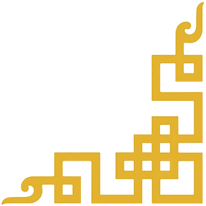
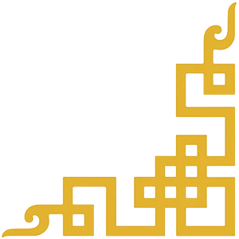

We have established Siam Vajrayana with the intent of making Dharma teachings and philosophy contemporarily relevant and accessible for those living today in this part of the world.
Our aim is to establish a firm cultural foundation for the people of this land, enabling them to proudly embrace this tradition as an integral part of Thai culture. The tradition of Siam Vajrayana seeks to help individuals harmoniously integrate all aspects of their spiritual and worldly lives into a coherent whole.
The spiritual narrative offered by Siam Vajrayana gives meaningful ways for individuals to relate to themselves and to the world at large. It guides them through the stages and conditions of life, aiming toward human flourishing and lasting happiness.
In addition to fostering spiritual and cultural growth, Siam Vajrayana plays a crucial role in the healing of body and mind. This holistic approach recognizes the interconnectedness of physical health and mental well-being. The teachings and practices of Dharma offer methods for rejuvenating the body, calming the mind, and restoring balance to our energetic systems.
By integrating the science of healing and sacred artistry, meditational practices and mythopoetical teachings on the nature of mind, and essential transmissions that cultivate compassion and awareness of our natural state, Siam Vajrayana offers a path toward fully embodied being. This is not only a relief for physical discomfort, but a gentle untangling of emotional and mental suffering.
Our Temple and Community are based in Bangkok, Thailand, where we honour our local roots and hold our living traditions with respect. We operate from the view that the truth of Dharma is inherently interconnected, and so we respect and celebrate the Dharma in all of its manifestations.
Siam Vajrayana is more than a spiritual path or a way of life; it is a cultural Renaissance — to nurture the collective soul of the people in this region, and to allow a form of growth that resonates with the unique heritage of this land.
— Park Rinpoche
Founder of Siam Vajrayana